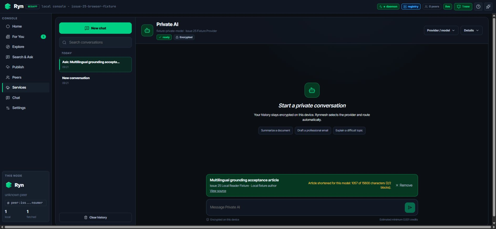
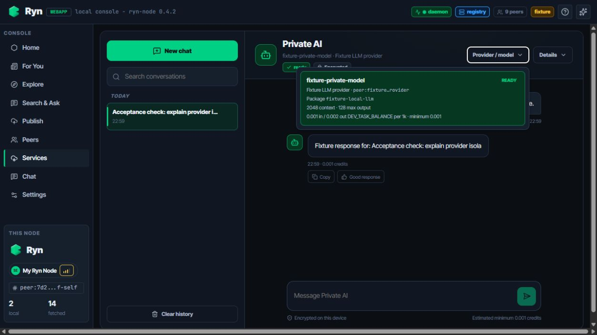

decision: development_acceptance_passed node_process_count: 2 independent_homes / ports: true / true online.private_ai_stream.status: succeeded stream_protocol: rynmesh.llm.stream.v1 transport: peer_http_direct online.next_order_denied_before_inference: true offline_restart.retry_delivery: delivered offline_restart.next_order_denied_before_inference: true invite_link_occurrences: 0 invite_secret_occurrences: 0 all_child_processes_stopped: true


$ python scripts/llm_e2e.py local-run profile: local-stream state: succeeded process_count: 4 stream_event_count: 3 first_delta_ms: 141 terminal_ms: 922 first_delta_before_terminal: true effective_response_mode: stream-v1 profile: local-fallback state: succeeded advertised protocols: [complete-v1] requested: stream-v1 effective: complete-v1 stream_event_count: 0 exactly-once + privacy PASS consumer hold / settlement: 1 / 1 provider earning: 1 persistent files scanned: 20 + 20 prompt/output body absent: true all processes stopped: true
$ pytest -q tests/test_linux_desktop_artifacts.py ........ [100%] 8 passed in 0.07s $ "C:/Program Files/Git/bin/bash.exe" -n <script> build-sidecar.sh PASS verify-sidecar.sh PASS verify-linux-deb.sh PASS smoke-linux-desktop.sh PASS workflow-yaml: PASS Webapp: 17 files / 85 tests PASS TypeScript lint + build PASS Selected format: Ubuntu 24.04 x86_64 .deb Sidecar contract: one externalBin; no system Python/Node Architecture contract: amd64 package + x86-64 ELF macOS verification wiring: preserved